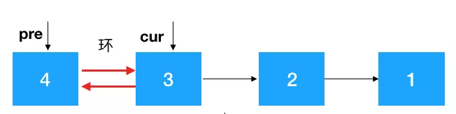
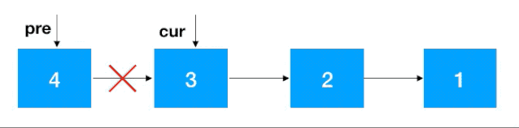
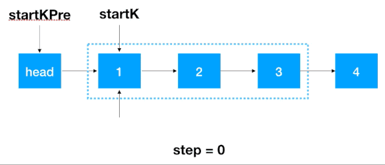
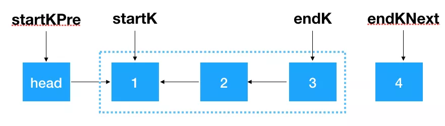
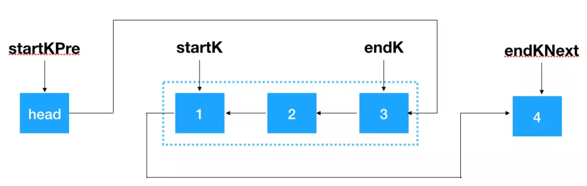
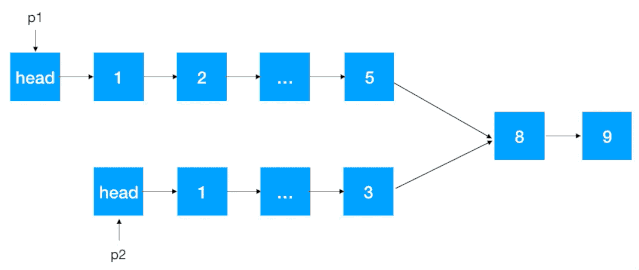
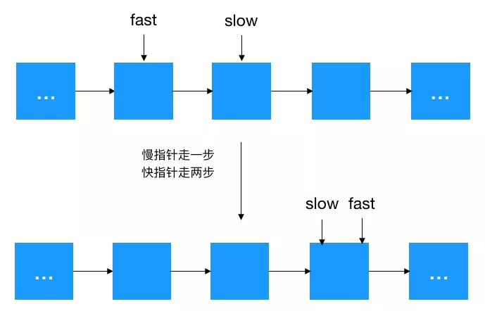

前言
如果说数据结构是算法的基础，那么数组和链表就是数据结构的基础。因为像堆、栈、队列、树、图等比较复杂的数组结基本上都可以由数组和链表来表示，所以掌握数组和链表的基本操作十分重要。
今天就来看看链表的基本操作及其在面试中的常见解题思路，本文将从以下几个点来讲解链表的核心知识：
- 什么是链表，链表的优缺点
- 链表的表示及基本操作
- 链表常见解题思路 —— 翻转
- 链表常见解题思路 —— 快慢指针
什么是链表
相信大家已经开始迫不及待地想用链表解题了，不过在开始之前我们还是要先来温习下链表的定义，以及它的优势与劣势，磨刀不误砍柴功！
链表的定义
链表是物理存储单元上非连续、非顺序的存储结构，它是由一个个结点，通过指针来联系起来的，其中每个结点包括数据和指针。
{kind=link}
链表的非连续、非顺序，对应数组的连续、顺序，我们来看看整型数组 1，2，3，4 在内存中是如何表示的：
{kind=link}
可以看到数组的每个元素都是连续紧邻分配的，这叫连续性，同时由于数组的元素占用的大小是一样的，在 Java 中 int 型大小固定为 4 个字节，所以如果数组的起始地址是 100， 由于这些元素在内存中都是连续紧邻分配的，大小也一样，可以很容易地找出数组中任意一个元素的位置，比如数组中的第三个元素起始地址为 100 + 2 * 4 = 108，这就叫顺序性。查找的时间复杂度是 O(1)，效率很高！
那链表在内存中是怎么表示的呢？
{kind=link}
可以看到每个结点都分配在非连续的位置，结点与结点之间通过指针连在了一起，所以如果我们要找比如值为 3 的结点时，只能通过结点 1 从头到尾遍历寻找，如果元素少还好，如果元素太多（比如超过一万个），每个元素的查找都要从头开始查找，时间复杂度是 O(n)，比起数组的 O(1)，差距不小。
除了查找性能链表不如数组外，还有一个优势让数组的性能高于链表，这里引入程序局部性原理，啥叫程序局部性原理？
我们知道 CPU 运行速度是非常快的，如果 CPU 每次运算都要到内存里去取数据无疑是很耗时的，所以在 CPU 与内存之间往往集成了挺多层级的缓存，这些缓存越接近 CPU，速度越快，所以如果能提前把内存中的数据加载到如下图中的 L1，L2，L3 缓存中，那么下一次 CPU 取数的话直接从这些缓存里取即可，能让 CPU 执行速度加快，那什么情况下内存中的数据会被提前加载到 L1，L2，L3 缓存中呢，答案是当某个元素被用到的时候，那么这个元素地址附近的的元素会被提前加载到缓存中。
{kind=link}
以上文整型数组 1，2，3，4 为例，当程序用到了数组中的第一个元素（即 1）时，由于 CPU 认为既然 1 被用到了，那么紧邻它的元素 2，3，4 被用到的概率会很大，所以会提前把 2，3，4 加到 L1，L2，L3 缓存中去，这样 CPU 再次执行的时候如果用到 2，3，4，直接从 L1，L2，L3 缓存里取就行了，能提升不少性能。
画外音：如果把 CPU 的一个时种看成一秒，则从 L1 读取数据需要 3 秒，从 L2 读取需要 11 秒，L3 读取需要 25 秒，而从内存读取呢，需要 1 分 40 秒，所以程序局部性原理能对 CPU 执行性能有很大的提升。
而链表呢，由于链表的每个结点在内存里都是随机分布的，只是通过指针联系在一起，所以这些结点的地址并不相邻，自然无法利用 程序局部性原理 来提前加载到 L1，L2，L3 缓存中来提升程序性能。
画外音：程序局部性原理是计算机中非常重要的原理，这里不做展开，建议大家查阅相关资料详细了解一下。
如上所述，相比数组，链表的非连续、非顺序确实让它在性能上处于劣势，那什么情况下该使用链表呢？考虑以下情况：
- 大内存空间分配
由于数组空间的连续性，如果要为数组分配 500M 的空间，这 500M 的空间必须是连续的、未使用的，所以在内存空间的分配上数组的要求会比较严格，如果内存碎片太多，分配连续的大空间很可能导致失败。而链表由于是非连续的，所以这种情况下选择链表更合适。 - 元素频繁删除和插入
如果涉及到元素的频繁删除和插入，用链表就会高效很多，对于数组来说，如果要在元素间插入一个元素，需要把其余元素一个个往后移（如图示），以为新元素腾空间（同理，如果是删除则需要把被删除元素之后的元素一个个往前移），效率上无疑是比较低的。

（在 1，2 间插入 5，需要把 2，3，4 同时往后移一位）
而链表的插入删除相对来说就比较简单了，修改指针位置即可，其他元素无需做任何移动操作（如图示：以插入为例）。
{kind=link}
综上所述：如果数据以查为主，很少涉及到增和删，选择数组，如果数据涉及到频繁的插入和删除，或元素所需分配空间过大，倾向于选择链表。
说了这么多理论，相信读者对数组和链表的区别应该有了更深刻地认识了，尤其是 程序局部性原理，是不是开了不少眼界 ^_^，如果面试中问到数组和链表的区别能回答到程序局部性原理，会是一个非常大的亮点！
接下来我们来看看链表的表现形式和解题技巧。
需要说明的是有些代码像打印链表等限于篇幅的关系没有在文中展示，我把文中所有相关代码都放到 github 中了，大家如果需要，可以访问我的 GitHub 地址：https://github.com/allentofight/algorithm 下载运行（微信不支持外链，建议大家 copy 之后浏览器打开再下载运行），文中所有代码均已用 Java 实现并运行通过。
链表的表示
由于链表的特点（查询或删除元素都要从头结点开始），所以我们只要在链表中定义头结点即可，另外如果要频繁用到链表的长度，还可以额外定义一个变量来表示。
需要注意的是这个头结点的定义是有讲究的，一般来说头结点有两种定义形式，一种是直接以某个元素结点为头结点，如下：
{kind=link}
一种是以一个虚拟的节点作为头结点，即我们常说的哨兵，如下：
{kind=link}
定义这个哨兵有啥好处呢，假设我们不定义这个哨兵，来看看链表及添加元素的基本操作怎么定义的：
1 | /** |
发现问题了吗，注意看下面代码：
{kind=link}
有两个问题：
- 每插入一个元素都要对头结点进行判空比较，如果一个链表有很多元素需要插入，就需要进行很多次的判空处理，不是那么高效
- 头结点与其他结点插入逻辑不统一（一个需要判空后再插入，一个不需要判空直接插入），从程序逻辑性来说不是那么合理（因为结点与结点是平级，添加逻辑理应相同）
如果定义了哨兵结点，以上两个问题都可解决，来看下使用哨兵结点的链表定义：
1 | public class LinkedList { |
可以看到，定义了哨兵结点的链表逻辑上清楚了很多，不用每次插入元素都对头结点进行判空，也统一了每一个结点的添加逻辑。
所以之后的习题讲解中我们使用的链表都是使用定义了哨兵结点的形式。
做了这么多前期的准备工作，终于要开始我们的正餐了：链表解题常用套路 —— 翻转！
链表常见解题套路 —— 翻转
热身赛
既然我们要用链表解题，那我们首先就构造一个链表吧 题目：给定数组 1，2，3，4 构造成如下链表 head --> 4 --> 3 --> 2 --> 1。
看清楚了，是逆序构造链表！顺序构造我们都知道怎么构造，对每个元素持续调用上文代码定义的 addNode 方法即可（即尾插法），与尾插法对应的，是头插法，即把每一个元素插到头节点后面即可，这样就能做到逆序构造链表，如图示（以插入 1，2 为例）：
{kind=link}
头插法比较简单，直接上代码，直接按以上动图的步骤来完成逻辑，如下：
1 | public class LinkedList { |
小试牛刀
现在我们加大一下难度，来看下曾经的 Google 面试题： 给定单向链表的头指针和一个节点指针，定义一个函数在 O(1) 内删除这个节点。
{kind=link}
如图示：即给定值为 2 的结点，如何把 2 给删了。
我们知道，如果给定一个结点要删除它的后继结点是很简单的，只要把这个结点的指针指向后继结点的后继结点即可。
{kind=link}
如图示：给定结点 2，删除它的后继结点 3， 把结点 2 的 next 指针指向 3 的后继结点 4 即可。
但给定结点 2，该怎么删除结点 2 本身呢？注意题目没有规定说不能改变结点中的值，所以有一种很巧妙的方法，狸猫换太子！我们先通过结点 2 找到结点 3，再把节点 3 的值赋给结点 2，此时结点 2 的值变成了 3，这时候问题就转化成了上图这种比较简单的需求，即根据结点 2 把结点 3 移除即可，看图：
{kind=link}
不过需要注意的是这种解题技巧只适用于被删除的指定结点是中间结点的情况，如果指定结点是尾结点，还是要老老实实地找到尾结点的前继结点，再把尾结点删除，代码如下：
1 | /** |
入门到进阶：链表翻转
接下来我们会重点看一下链表的翻转，链表的翻转可以衍生出很多的变形，是面试中非常热门的考点，基本上考链表必考翻转！所以掌握链表的翻转是必修课！
什么是链表的翻转：给定链表 head --> 4 --> 3 --> 2 --> 1，将其翻转成 head --> 1 --> 2 --> 3 --> 4，由于翻转链表是如此常见，如此重要，所以我们分别详细讲解下如何用递归和非递归这两种方式来解题。
递归翻转
关于递归的文章之前写了三篇，如果之前没读过的，强烈建议点击这里查看，总结了递归的常见解题套路，给出了递归解题的常见四步曲，如果看完对以下递归的解题套路会更加深刻，这里不做赘述了，我们直接套递归的解题思路：
首先我们要查看翻转链表是否符合递归规律：问题可以分解成具有相同解决思路的子问题，子子问题…… 直到最终的子问题再也无法分解。
要翻转 head --> 4 --> 3 --> 2 --> 1 链表，不考虑 head 结点，分析 4 --> 3 --> 2 --> 1，仔细观察我们发现只要先把 3 --> 2 --> 1 翻转成 3 <-- 2 <-- 1，之后再把 3 指向 4 即可（如下图示）。
{kind=link}
图：翻转链表主要三步骤
只要按以上步骤定义好这个翻转函数的功能即可， 这样由于子问题与最初的问题具有相同的解决思路，拆分后的子问题持续调用这个翻转函数即可达到目的。
注意看上面的步骤 1，问题的规模是不是缩小了（如下图），从翻转整个链表变成了只翻转部分链表！问题与子问题都是从某个结点开始翻转，具有相同的解决思路，另外当缩小到只翻转一个结点时，显然是终止条件，符合递归的条件！之后的翻转 3 --> 2 --> 1，2 --> 1 持续调用这个定义好的递归函数即可！
{kind=link}
既然符合递归的条件，那我们就可以套用递归四步曲来解题了（注意翻转之后 head 的后继节点变了，需要重新设置！别忘了这一步）。
定义递归函数，明确函数的功能 根据以上分析，这个递归函数的功能显然是翻转某个节点开始的链表，然后返回新的头结点。
1
2
3
4
5/**
* 翻转结点 node 开始的链表
*/
public Node invertLinkedList(Node node) {
}寻找递推公式 上文中已经详细画出了翻转链表的步骤，简单总结一下递推步骤如下：
- 针对结点 node（值为 4），先翻转 node 之后的结点
invert(node->next)，翻转之后4 --> 3 --> 2 --> 1变成了4 --> 3 <-- 2 <-- 1； - 再把 node 节点的下个节点（3）指向 node，node 的后继节点设置为空（避免形成环），此时变成了
4 <-- 3 <-- 2 <-- 1； - 返回新的头结点，因为此时新的头节点从原来的 4 变成了 1，需要重新设置一下 head。
- 针对结点 node（值为 4），先翻转 node 之后的结点
将递推公式代入第一步定义好的函数中，如下
invertLinkedList：1
2
3
4
5
6
7
8
9
10
11
12
13
14
15
16
17
18
19
20
21
22
23
24
25
26
27
28
29
30/**
* 递归翻转结点 node 开始的链表
*/
public Node invertLinkedList(Node node) {
if (node.next == null) {
return node;
}
// 步骤 1：先翻转 node 之后的链表
Node newHead = invertLinkedList(node.next);
// 步骤 2：再把原 node 节点后继结点的后继结点指向 node (4)，node 的后继节点设置为空(防止形成环)
node.next.next = node;
node.next = null;
// 步骤 3：返回翻转后的头结点
return newHead;
}
public static void main(String[] args) {
LinkedList linkedList = new LinkedList();
int[] arr = {4,3,2,1};
for (int i = 0; i < arr.length; i++) {
linkedList.addNode(arr[i]);
}
Node newHead = linkedList.invertLinkedList(linkedList.head.next);
// 翻转后别忘了设置头结点的后继结点！
linkedList.head.next = newHead;
linkedList.printList(); // 打印 1，2，3，4
}
画外音：翻转后由于 head 的后继结点变了，别忘了重新设置哦！
- 计算时间/空间复杂度 由于递归调用了 n 次 invertLinkedList 函数，所以时间复杂度显然是
O(n)，空间复杂度呢，没有用到额外的空间，但是由于递归调用了 n 次 invertLinkedList 函数，压了 n 次栈，所以空间复杂度也是O(n)。
递归一定要从函数的功能去理解，从函数的功能看，定义的递归函数清晰易懂，定义好了之后，由于问题与被拆分的子问题具有相同的解决思路，所以子问题只要持续调用定义好的功能函数即可，切勿层层展开子问题，此乃递归常见的陷阱！仔细看函数的功能，其实就是按照下图实现的。（对照着代码看，是不是清晰易懂 ^_^）
{kind=link}
非递归翻转链表（迭代解法）
我们知道递归比较容易造成栈溢出，所以如果有其他时间/空间复杂度相近或更好的算法，应该优先选择非递归的解法，那我们看看如何用迭代来翻转链表，主要思路如下：
{kind=link}
定义两个节点：pre，cur，其中 cur 是 pre 的后继结点，如果是首次定义，需要把 pre 指向 cur 的指针去掉，否则由于之后链表翻转，cur 会指向 pre，就进行了一个环（如下），这一点需要注意。
 知道了 cur 和 pre，翻转就容易了，把 cur 指向 pre 即可，之后把 cur 设置为 pre，cur 的后继结点设置为 cur 一直往前重复此步骤即可，完整动图如下：

{kind=link}
{kind=link}
注意：同递归翻转一样，迭代翻转完了之后 head 的后继结点从 4 变成了 1，记得重新设置一下。
知道了解题思路，实现代码就容易多了，直接上代码：
1 | /** |
用迭代的思路来做由于循环了 n 次，显然时间复杂度为 O(n)，另外由于没有额外的空间使用，也未像递归那样调用递归函数不断压栈，所以空间复杂度是 O(1)，对比递归，显然应该使用迭代的方式来处理！
花了这么大的精力我们总算把翻转链表给搞懂了，如果大家看了之后几道翻转链表的变形，会发现我们花了这么大篇幅讲解翻转链表是值得的。
接下来我们来看看链表翻转的变形。
变形题 1：给定一个链表的头结点 head，以及两个整数 from 和 to，在链表上把第 from 个节点和第 to 个节点这一部分进行翻转。 例如：给定如下链表：from = 2，to = 4
head --> 5 --> 4 --> 3 --> 2 --> 1，将其翻转后，链表变成head --> 5 --> 2 --> 3 --> 4 --> 1。
有了之前翻转整个链表的解题思路，现在要翻转部分链表就相对简单多了，主要步骤如下：
- 根据 from 和 to 找到 from - 1，from，to，to + 1 四个结点（注意临界条件，如果 from 从头结点开始，则 from - 1 结点为空，翻转后需要把 to 设置为头结点的后继结点， from 和 to 结点也可能超过尾结点，这两种情况不符合条件不翻转）；
- 对 from 到 to 的结点进行翻转；
- 将 from - 1 节点指向 to 结点，将 from 结点指向 to + 1 结点。
{kind=link}
知道了以上的思路，代码就简单了，按上面的步骤 1，2，3 实现，注释也写得很详细，看以下代码（对 from 到 to 结点的翻转我们使用迭代翻转，当然使用递归也是可以的，限于篇幅关系不展开，大家可以尝试一下）。
1 | /** |
变形题 2：给出一个链表，每 k 个节点一组进行翻转，并返回翻转后的链表。k 是一个正整数，它的值小于或等于链表的长度。如果节点总数不是 k 的整数倍，那么将最后剩余节点保持原有顺序。
示例：给定这个链表：head --> 1 --> 2 --> 3 --> 4 --> 5，当 k = 2 时，应当返回：head --> 2 --> 1 --> 4 --> 3 --> 5；当 k = 3 时，应当返回：head --> 3 --> 2 --> 1 --> 4 --> 5。说明：
- 你的算法只能使用常数的额外空间；
- 你不能只是单纯的改变节点内部的值，而是需要实际的进行节点交换。
这道题是 LeetCode 的原题，属于 hard 级别，如果这一题你懂了，那对链表的翻转应该基本没问题了，有了之前的翻转链表基础，相信这题不难。
只要我们能找到翻一组 k 个结点的方法，问题就解决了（之后只要重复对 k 个结点一组的链表进行翻转即可）。
接下来，我们以以下链表为例：
{kind=link}
来看看怎么翻转 3 个一组的链表（此例中 k = 3）：
首先，我们要记录 3 个一组这一段链表的前继结点，定义为 startKPre，然后再定义一个 step，从这一段的头结点(1）开始遍历 2 次，找出这段链表的起始和终止结点，如下图示：
 找到 startK 和 endK 之后，根据之前的迭代翻转法对 startK 和 endK 的这段链表进行翻转。
 然后将 startKPre 指向 endK，将 startK 指向 endKNext，即完成了对 k 个一组结点的翻转。

{kind=link}
{kind=link}
{kind=link}
知道了一组 k 个怎么翻转，之后只要重复对 k 个结点一组的链表进行翻转即可，对照图示看如下代码应该还是比较容易理解的：
1 | /** |
时间复杂度是多少呢，对链表从头到尾循环了 n 次，同时每 k 个结点翻转一次，可以认为总共翻转了 n 次，所以时间复杂度是 O(2n)，去掉常数项，即为 O(n)。 注：这题时间复杂度比较误认为是 O(k * n)，实际上并不是每一次链表的循环都会翻转链表，只是在循环链表元素每 k 个结点的时候才会翻转。
变形 3：变形 2 针对的是顺序的 k 个一组翻转，那如何逆序 k 个一组进行翻转呢？
例如：给定如下链表，head --> 1 --> 2 --> 3 --> 4 --> 5，逆序 k 个一组翻转后，链表变成（k = 2 时）head --> 1 --> 3 --> 2 --> 5 --> 4。
这道题是字节跳动的面试题，确实够变态的，顺序 k 个一组翻转都已经属于 hard 级别了，逆序 k 个一组翻转更是属于 super hard 级别了，不过其实有了之前知识的铺垫，应该不难，只是稍微变形了一下，只要对链表做如下变形即可：
{kind=link}
代码的每一步其实都是用了我们之前实现好的函数，所以我们之前做的每一步都是有伏笔的哦！就是为了解决字节跳动这道终极面试题！
1 | /** |
由此可见，掌握基本的链表翻转非常重要！难题多是在此基础了做了相应的变形而已。
链表解题利器 —— 快慢指针
快慢指针在面试中出现的概率也很大，也是务必要掌握的一个要点，本文总结了市面上常见的快慢指针解题技巧，相信看完后此类问题能手到擒来。本文将详细讲述如何用快慢指针解决以下两大类问题：
- 寻找/删除第 K 个结点；
- 有关链表环问题的相关解法。
寻找/删除第 K 个结点
小试牛刀之一
LeetCode 876：给定一个带有头结点 head 的非空单链表，返回链表的中间结点。如果有两个中间结点，则返回第二个中间结点。
解法一
要知道链表的中间结点，首先我们需要知道链表的长度，说到链表长度大家想到了啥，还记得我们在上文中说过哨兵结点可以保存链表的长度吗，这样直接 从 head 的后继结点 开始遍历 链表长度 / 2 次即可找到中间结点。为啥中间结点是 链表长度 / 2 ，我们仔细分析一下：
- 假如链表长度是奇数：
head --> 1 --> 2 --> 3 --> 4 --> 5，从 1 开始遍历 5 / 2 = 2（取整）次，到达 3，3 确实是中间结点； - 假如链表长度是偶数：
head --> 1 --> 2 --> 3 --> 4 --> 5 --> 6，从 1 开始遍历 6 / 2 = 3 次，到达 4，4 确实是中间结点的第二个结点。
画外音：多画画图，举举例，能看清事情的本质！
哨后结点的长度派上用场了，这种方式最简单，直接上代码：
1 | public Node findMiddleNode() { |
解法二
如果哨兵结点里没有定义长度呢，那就要遍历一遍链表拿到链表长度（定义为 length）了，然后再从头结点开始遍历 length / 2 次即为中间结点。
1 | public Node findMiddleNodeWithoutHead() { |
解法三
解法二由于要遍历两次链表，显得不是那么高效，那能否只遍历一次链表就能拿到中间结点呢。
这里就引入我们的快慢指针了，主要有三步 1、快慢指针同时指向 head 的后继结点；2、慢指针走一步，快指针走两步；3、不断地重复步骤 2，什么时候停下来呢，这取决于链表的长度是奇数还是偶数。
{kind=link}
{kind=link}
由以上分析可知：当 fast = null 或者 fast.next = null 时，此时的 slow 结点即为我们要求的中间结点，否则不断地重复步骤 2。知道了思路，代码实现就简单了。
1 | /** |
有了上面的基础，我们现在再大一下难度，看下下面这道题：
输入一个链表，输出该链表中的倒数第 k 个结点。比如链表为
head --> 1 --> 2 --> 3 --> 4 --> 5。求倒数第三个结点（即值为 3 的节点）
分析：我们知道如果要求顺序的第 k 个结点还是比较简单的，从 head 开始遍历 k 次即可，如果要求逆序的第 k 个结点，常规的做法是先顺序遍历一遍链表，拿到链表长度，然后再遍历 链表长度 - k 次即可，这样要遍历两次链表，不是那么高效，如何只遍历一次呢，还是用我们的说的快慢指针解法：
- 首先让快慢指针同时指向 head 的后继结点；
- 快指针往前走 k - 1 步，先走到第 k 个结点；
- 快慢指针同时往后走一步，不断重复此步骤，直到快指针走到尾结点，此时的 slow 结点即为我们要找的倒序第 k 个结点。
{kind=link}
注：需要注意临界情况：k 大于链表的长度，这种异常情况应该抛异常。
1 | public Node findKthToTail(int k) throws Exception { |
知道了如何求倒序第 k 个结点，再来看看下面这道题：
给定一个单链表，设计一个算法实现链表向右旋转 K 个位置。举例： 给定
head --> 1 --> 2 --> 3 --> 4 --> 5 --> NULL，K = 3，右旋后即为head --> 3 --> 4 --> 5 --> 1 --> 2 --> NULL。
分析：这道题其实是对求倒序第 K 个位置的的一个变形，主要思路如下：
- 先找到倒数第 K + 1 个结点，此结点的后继结点即为倒数第 K 个结点；
- 将倒数第 K + 1 结点的的后继结点设置为 null；
- 将 head 的后继结点设置为以上所得的倒数第 K 个结点，将原尾结点的后继结点设置为原 head 的后继结点。
{kind=link}
1 | public void reversedKthToTail(int k) throws Exception { |
有了上面两道题的铺垫，相信下面这道题不是什么难事，限于篇幅关系，这里不展开，大家可以自己试试。
输入一个链表，删除该链表中的倒数第 k 个结点。
小试牛刀之二
判断两个单链表是否相交及找到第一个交点，要求空间复杂度
O(1)。 如图示：如果两个链表相交，5 为这两个链表相交的第一个交点。
{kind=link}
画外音：如果没有空间复杂度
O(1)的限制，其实有多种解法，一种是遍历链表 1，将链表 1 的所有的结点都放到一个 set 中，再次遍历链表 2，每遍历一个结点，就判断这个结点是否在 set，如果发现结点在这个 set 中，则这个结点就是链表第一个相交的结点。
分析：首先我们要明白，由于链表本身的性质，如果有一个结点相交，那么相交结点之后的所有结点都是这两个链表共用的，也就是说两个链表的长度主要相差在相交结点之前的结点长度，于是我们有以下思路：
如果链表没有定义长度，则我们先遍历这两个链表拿到两个链表长度，假设分别为 L1，L2（L1 >= L2），定义 p1，p2 指针分别指向各自链表 head 结点，然后 p1 先往前走
L1 - L2步。这一步保证了 p1，p2 指向的指针与相交结点（如果有的话）一样近。 然后 p1，p2 不断往后遍历，每次走一步，边遍历边判断相应结点是否相等，如果相等即为这两个链表的相交结点。
1
2
3
4
5
6
7
8
9
10
11
12
13
14
15
16
17
18
19
20
21
22
23
24
25
26
27
28
29
30
31
32
33
34
35
36
37
38
39
40
41
42
43
44
45
46public static Node detectCommonNode(LinkedList list1, LinkedList list2) {
int length1 = 0; // 链表 list1 的长度
int length2 = 0; // 链表 list2 的长度
Node p1 = list1.head;
Node p2 = list2.head;
while (p1.next != null) {
length1++;
p1 = p1.next;
}
while (p2.next != null) {
length2++;
p2 = p2.next;
}
p1 = list1.head;
p2 = list2.head;
// p1 或 p2 前进 |length1-length2| 步
if (length1 >= length2) {
int diffLength = length1-length2;
while (diffLength > 0) {
p1 = p1.next;
diffLength--;
}
} else {
int diffLength = length2-length1;
while (diffLength > 0) {
p2 = p2.next;
diffLength--;
}
}
// p1，p2分别往后遍历，边遍历边比较，如果相等，即为第一个相交结点
while (p1 != null && p2.next != null) {
p1 = p1.next;
p2 = p2.next;
if (p1.data == p2.data) {
// p1，p2 都为相交结点，返回 p1 或 p2
return p1;
}
}
// 没有相交结点，返回空指针
return null;
}
{kind=link}
进阶
接下来我们来看如何用快慢指针来判断链表是否有环，这是快慢指针最常见的用法。
判断链表是否有环，如果有，找到环的入口位置（下图中的 2），要求空间复杂度为
O(1)。
{kind=link}
首先我们要看如果链表有环有什么规律，如果从 head 结点开始遍历，则这个遍历指针一定会在以上的环中绕圈子，所以我们可以分别定义快慢指针，慢指针走一步，快指针走两步， 由于最后快慢指针在遍历过程中一直会在圈中里绕，且快慢指针每次的遍历步长不一样，所以它们在里面不断绕圈子的过程一定会相遇，就像 5000 米长跑，一人跑的快，一人快的慢，跑得快的人一定会追上跑得慢的（即套圈）。
还不明白？那我们简单证明一下：
假如快指针离慢指针相差一个结点，则再一次遍历，慢指针走一步，快指针走两步，相遇。
 假如快指针离慢指针相差两个结点，则再一次遍历，慢指针走一步，快指针走两步，相差一个结点，转成上述 1 的情况。
假如快指针离慢指针相差 N 个结点（N 大于 2），则下一次遍历由于慢指针走一步，快指针走两步，所以相差
N + 1 - 2 = N - 1个结点，发现了吗，相差的结点从 N 变成了 N - 1 ，缩小了！不断地遍历，相差的结点会不断地缩小，当 N 缩小为 2 时，即转为上述步骤 2 的情况，由此得证，如果有环，快慢指针一定会相遇！
{kind=link}
画外音：如果慢指针走一步，快指针走的不是两步，而是大于两步，会有什么问题，大家可以考虑一下。
1 | /** |
判断有环为啥要返回相遇的结点，而不是返回 true 或 false 呢。 因为题目中还有一个要求，判断环的入口位置，就是为了这个做铺垫的，一起来看看怎么找环的入口，需要一些分析的技巧。
{kind=link}
假设上图中的 7 为快慢指针相遇的结点，不难看出慢指针走了 L + S 步，快指针走得比慢指针更快，它除了走了 L + S 步外，还额外在环里绕了 n 圈，所以快指针走了 L + S + nR 步（R为图中环的长度），另外我们知道每遍历一次，慢指针走了一步，快指针走了两步，所以快指针走的路程是慢指针的两倍，即 2 (L + S) = L + S + nR，即 L + S = nR。
- 当 n = 1 时，则
L + S = R时，则从相遇点 7 开始遍历走到环入口点 2 的距离为R - S = L，刚好是环的入口结点，而 head 与环入口点 2 的距离恰好也为 L，所以只要在头结点定义一个指针，在相遇点（7）定义另外一个指针，两个指针同时遍历，每次走一步，必然在环的入口位置 2 相遇。 - 当 n > 1 时，
L + S = nR，即L = nR - S。nR - S怎么理解？可以看作是指针从结点 7 出发，走了 n 圈后，回退 S 步，此时刚好指向环入口位置，也就是说如果设置一个指针指向 head（定义为 p1），另设一个指针指向 7（定义为 p2），不断遍历，p2 走了nR - S时（即环的入口位置），p1 也刚好走到这里（此时 p1 走了nR - S = L步，刚好是环入口位置），即两者相遇！
综上所述，要找到入口结点，只需定义两个指针，一个指针指向 head，一个指针指向快慢指向的相遇点，然后这两个指针不断遍历（同时走一步），当它们指向同一个结点时即是环的入口结点。
1 | public Node getRingEntryNode() { |
思考题：知道了环的入口结点，怎么求环的长度？
总结
本文详细讲解了链表与数组的本质区别，相信大家对两者的区别应该有了比较深刻的认识，尤其是程序局部性原理，相信大家看了应该会眼前一亮，之后通过对链表的翻转由浅入深地介绍，相信之后的链表翻转对大家应该不是什么难事了，之后再介绍了链表的另一个重要的解题技巧：快慢指针，这两大类是面试的高频题，大家一定要掌握！建议大家亲自实现一遍文中的代码哦，这样印象会更深刻一些！有一些看起来思路是这么一回事，但真正操作起来还是会有不少坑，纸上得来终觉浅，绝知此事要躬行！